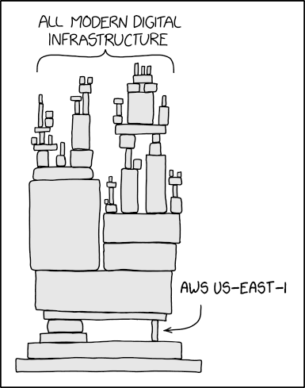

Para responder sin caer en opiniones, tenemos que hacernos la pregunta del analista: ¿qué mediríamos para probarlo?
BLOQUE 1 · TEORÍA · Apertura · Evidencia vs percepción
Si quisiéramos probarlo, ¿qué mediríamos?
Señal 1 · Atención
Búsquedas y menciones
Demuestra atención masiva en el feed.
Límite: El feed explota, pero internet sigue intacto.
Señal 2 · Demanda
Concurrencia y tráfico
Demuestra presión concentrada en una app.
Límite: Cae una tienda, pero el planeta opera normal.
Señal 3 · Infraestructura
Dependencia técnica
Demuestra impacto sistémico en cascada.
Criterio real: Se rompe la capa compartida que todos usan.
Un buen data storyteller no repite el hype: lo redefine con una pregunta observable y evidencia técnica.
Si la atención masiva no rompe internet, ¿qué clase de arquitectura sí lo pone en jaque?
BLOQUE 1 · TEORÍA · Apertura · La bisagra conceptual
20 de octubre de 2025
Eso sí es romper internet

Lo que parece un chiste es arquitectura real
Toda la infraestructura moderna de internet depende de un proyecto mantenido por alguien sin sueldo en Nebraska desde 2003.
Pasamos de “todo el mundo estaba hablando de eso” a “múltiples servicios críticos dejaron de operar al mismo tiempo”.
Cuando una capa invisible sostiene demasiados sistemas, un fallo en la base se vuelve inmediatamente sistémico.
Referencia: XKCD #2347 (Dependency). Caso de estudio: caída global de infraestructura del 20 de octubre de 2025.
El 20 de octubre de 2025 este meme dejó de ser caricatura y se convirtió en telemetría en vivo...
BLOQUE 1 · TEORÍA · Apertura · El plot twist
20 de octubre de 2025
Plot twist: viral no es lo mismo que sistémico
AWS, 20 de octubre de 2025
Cuando falló una capa base de infraestructura, no colapsó solo una app: se cayeron bancos, streaming, logística y pagos en más de 20 países.
15+ hrecuperación
2.500+empresas
11 M+reportes
Momento viral
Mucha gente mirando lo mismo.
VS
Falla sistémica
Servicios colapsando en cadena.
Conclusión del analista: Viral describe atención en una pantalla. Sistémico describe fragilidad en la infraestructura.
Datos: ThousandEyes, “AWS Outage Analysis: October 20, 2025”; AP News & Axios (octubre 2025).
¿Por qué funcionó este ejemplo? Porque no empezó con la telemetría: empezó con la conclusión. Y eso nos lleva a la regla médica...
BLOQUE 1 · TEORÍA · Apertura · La analogía de la clase
El radiólogo que entrega la placa sin decir nada no le sirve al paciente.
¿Por qué funcionó este ejemplo? Porque no les conté cuántos terabytes de logs de CloudWatch descargué. Les di la conclusión en la primera frase.
El analista que entrega la gráfica sin la conclusión es como el radiólogo que entrega la placa sin decirle al paciente qué tiene. La placa es la evidencia técnica; la frase es el diagnóstico que permite decidir. Todo lo de hoy es sobre construir esa frase.
Si el problema es quedarse en la placa, ¿dónde se rompe exactamente la comunicación con quien decide?
BLOQUE 1 · TEORÍA · Apertura · Las 4 causas de fracaso
Dónde se rompe la presentación de datos
Uno
Empieza por el proceso
❌ “Descargamos el CSV, limpiamos los nulos y corrimos un GroupBy...”
✅ “El 73% del presupuesto comprometido sigue sin pagarse.”
Dos
Audiencia equivocada
❌ Al gerente: “El p-valor dio 0.03 con R² de 0.81 en la regresión...”
✅ Al gerente: “El retraso en obras nos cuesta $15.000 millones este mes.”
Tres
Los títulos describen
❌ “Distribución de compromisos y pagos por sector”
✅ “Educación concentra $20,3 billones de la brecha nacional”
Cuatro
Termina en descripción
❌ “En conclusión, observamos alta variabilidad. ¿Preguntas?”
✅ “Acción: Auditar los 5 contratos con mayor atraso este lunes.”
La causa #1 de fracaso es empezar por el proceso. La regla de apertura del periodismo resuelve esto en una sola frase.
BLOQUE 1 · TEORÍA · Apertura · La regla del noticiero · Ejercicio oral
La regla de apertura: empiece por la respuesta
La regla del noticiero
“Ningún noticiero abre diciendo: hoy salimos a las cinco de la mañana e hicimos doce entrevistas.”
Abre con lo que pasó. El método va después, en el anexo técnico. La primera frase de su presentación es su conclusión, no su metodología.
Ejercicio oral · Reescriba esta apertura
❌ “Buenas tardes. Descargamos el dataset, hicimos la limpieza, quitamos nulos, normalizamos las columnas y construimos varias visualizaciones para ver el gasto...”
El reto en voz alta: Conviértala en una afirmación con cifra que quepa en una sola respiración. Si necesita dos, sobra una oración.
Pista para el salón: La versión ganadora empieza por lo que el país o el negocio hizo, jamás por las librerías que ustedes importaron.
Tener la apertura resuelta no garantiza una historia: si las slides se pueden barajar, sigue siendo una lista.
BLOQUE 1 · TEORÍA · El marco narrativo · La prueba del intercambio
Si intercambia dos diapositivas y la presentación funciona igual, no tiene una historia: tiene una lista.
Es el criterio que usa este curso, y es mecánico: en una lista el orden es arbitrario y aburre. En una historia cada slide existe porque la anterior la hizo necesaria.
El mini-deck modelo en vivo: A continuación veremos las cuatro slides reales del pitch funcionando en secuencia estricta: Contexto → Hallazgo → Implicación → Acción.
Slide 1 del modelo: no hay agenda ni método. Se abre instalando la pregunta y la urgencia.
SLIDE MODELO 1 DE 4
CONTEXTO · ¿De qué hablamos y por qué nos importa hoy?
“El Estado se comprometió a ejecutar $92 billones en 2025: ¿a dónde se fue realmente esa inversión?”
La escala del compromiso
$92,3 Billones
Compromisos contractuales y convenios oficiales firmados por el Estado para la vigencia 2025 en 32 departamentos y sectores.
La urgencia de negocio
Por qué responderlo ahora
A menos de tres meses del cierre del año fiscal, el país necesita saber si los recursos públicos se transformaron en obras terminadas o si continúan atrapados en trámites.
Cómo funciona en el pitch: Instala la tensión y la pregunta de negocio sin gastar un solo segundo en explicar el dataset, los scrapers ni la metodología.
Instalada la duda en la sala, la siguiente slide responde de inmediato con la cifra del hallazgo.
SLIDE MODELO 2 DE 4
HALLAZGO · ¿Qué descubrimos en los datos?
“Hay $67 billones congelados entre la firma del contrato y el giro en caja”
Promesa oficial
$92,3 Billones
Comprometidos en contratos firmados.
Realidad en caja
$25,3 Billones
Pagados efectivamente a contratistas.
La brecha nacional
$67,0 Billones
72,6% congelado: brecha sin materializar.
■ Pagado: 27,4% ($25,3 B)■ Brecha congelada: 72,6% ($67,0 B)
Cómo funciona en el pitch: La afirmación es el titular y el contraste numérico habla solo: siete de cada diez pesos prometidos nunca llegaron a ejecutarse.
El número impresiona, pero el decisor pregunta de inmediato: ¿en qué sector duele y qué significa para los ciudadanos?
SLIDE MODELO 3 DE 4
IMPLICACIÓN · ¿Y eso qué significa para quien decide?
“En Educación, 9 de cada 10 pesos comprometidos siguen sin llegar a las aulas”
Concentración del rezago
El sector más crítico
Educación concentra $20,3 billones de la brecha nacional. Su ratio de ejecución real es de apenas el 9,7%: es el sector con mayor atraso de todo el presupuesto.
El costo de no actuar
Impacto tangible
342 proyectos escolares y comedores paralizados en territorio. Si el ritmo no cambia antes del 31 de diciembre, los recursos expiran sin beneficio comunitario.
Cómo funciona en el pitch: Conecta el hallazgo con la realidad del decisor (responder al “¿Y eso qué?”): no es un problema de tesorería, es un año escolar sin infraestructura.
La consecuencia es clara e inaceptable. Ahora el pitch debe cerrarse con una decisión concreta, no con dudas.
SLIDE MODELO 4 DE 4
ACCIÓN · ¿Qué hay que hacer, quién y cuándo?
“Auditar los 5 contratos con mayor atraso en la Secretaría de Educación antes del 30 de noviembre”
Quién · Responsable
Comité de Control Fiscal
Secretaría General de Educación y Contraloría delegada para vigilar el desembolso.
Qué · Métrica y foco
5 contratos clave
Inspección legal y física de los 5 contratos que concentran $8,4 billones del rezago sectorial.
Cuándo · Fecha límite
30 de noviembre
Entrega del informe vinculante para liberar pagos de obra o terminar convenios incumplidos.
Cómo funciona en el pitch: Termina con una decisión ejecutiva directa (responsable + métrica + fecha). Jamás concluye con un resumen pasivo ni con “gracias, ¿preguntas?”.
Acaban de ver las 4 slides en acción. Para que su propio proyecto alcance este nivel, aplicaremos tres filtros de pulido.
BLOQUE 1 · TEORÍA · Filtro 1 · Tres niveles de detalle
Un hallazgo, tres audiencias
No es mentir tres veces: son tres niveles de detalle sobre un solo hecho
Audiencia
Qué le importa
Cómo se dice el mismo hallazgo
Ejecutivo
La decisión y el riesgo
“Estamos comprometiendo tres veces más de lo que pagamos. Si el ritmo sigue, cerramos el año con la mayor parte sin materializar.”
Gerente de área
Dónde actuar y con qué recursos
“Educación concentra 20 de los 67 billones de brecha. Ahí es donde primero hay que revisar el proceso de pago.”
Técnico
Cómo se calculó y qué tan confiable es
“Sumé compromisos y pagos por sector sobre 3.645 registros, sin nulos. Brecha por resta directa; no ajusté por vigencias futuras.”
Una presentación, una audiencia principal. En este salón conviven Sistemas e Industrial (quien diseña el sistema vs quien optimiza el proceso). Regla operativa: hable para el más alto en la cadena de decisión y guarde el respaldo técnico listo para las preguntas.
Elegida la audiencia, el segundo filtro define cómo se nombran las diapositivas: el título nunca es un índice.
BLOQUE 1 · TEORÍA · Filtro 2 · Afirmar vs describir
El título de la slide es el mensaje
Uno
Verbo que afirma
“Concentra”, “sigue sin pagarse”, “no produce”. Si no tiene verbo, es una etiqueta.
Dos
Una cifra, no tres
La cifra hace la afirmación verificable. Tres cifras en un título es indecisión.
Tres
Recorte con nombre
De qué sector, año o población. Una cifra sin recorte no significa nada.
Título descriptivo · débil
Título con mensaje · fuerte
“Compromisos y pagos por sector”
“Educación concentra un tercio de la brecha nacional”
“Distribución del gasto”
“Nueve de cada diez pesos comprometidos siguen sin pagarse”
“Análisis de correlación”
“Más presupuesto no está produciendo más ejecución”
La prueba de los títulos: Lea en voz alta solo los títulos de su deck, seguidos y sin el cuerpo. Si esa secuencia ya cuenta la historia completa, el deck está listo. Si suena a índice, tiene que reescribirlos.
Con títulos contundentes, el tercer filtro limpia el contenido visual y fija la frontera de la honestidad analítica.
BLOQUE 1 · TEORÍA · Filtro 3 · Foco visual y ética analítica
Foco visual y la frontera de la opinión
1. Foco visual · Data-ink ratio
Antes (ruido): Título descriptivo, 4 gráficos apelmazados, tabla sin filtrar, 12 categorías en leyenda. Todo cierto, nada memorable.
Después (foco): Título que afirma, 1 gráfico con la barra clave en oro y el resto en gris. Una sola anotación directa.
Si le tapo la pantalla en 30 segundos, ¿cuál de las dos me explica de memoria?
2. Ética · Analítica vs opinión
Lo que el dato aguanta: “Hay 67 billones congelados entre contrato y giro; Educación concentra el 30% del rezago.”
Lo que NO aguanta: “Se robaron la plata para favorecer a otro ministerio.”
El dato sostiene la descripción de los hechos, jamás la intención moral no probada.
Regla para el entregable: Storytelling no es maquillar: es elegir el orden en que se dicen números verdaderos. Si alguien le pregunta el respaldo, debe poder mostrar la fuente y los datos reales.
Dominados los tres filtros, recopilemos las 5 reglas clave antes de pasar al taller.
BLOQUE 1 · TEORÍA · Síntesis final
Lo que se lleva del Bloque 1
La primera frase es la conclusión, no la metodología: empiece por lo que pasó, nunca por la limpieza de datos.
Una presentación, una audiencia principal: hable para el más alto en la cadena de decisión y guarde el respaldo técnico.
El título afirma el mensaje: verbo activo + una cifra + recorte específico. Si lee solo los títulos, la historia ya debe entenderse.
La narrativa tiene cuatro pasos encadenados: Contexto → Hallazgo → Implicación → Acción. Si intercambia dos slides y no pasa nada, tiene una lista.
El dato sostiene la descripción, no la intención: documente la brecha sin atribuir juicios morales no demostrados.
La teoría está lista: ahora le toca a usted construir una historia que convenza a la sala.
Pasamos al taller: sprint de 1 hora para definir tema, redactar las 4 slides y ensayar.
02
Bloque dos · Sprint de 1 hora
Taller · Ahora es tu turno: construye tu historia
Sprint de 60 minutos: exactamente 1 hora para definir tema, redactar las 4 slides y ensayar. Sin cuadernos ni código en pantalla: foco absoluto en narrativa y decisión.
Taller · Sprint intensivo de 1 hora (60 minutos)
La consigna: tema libre en cuatro slides
Libertad de tema
Su proyecto o su pasión
Su proyecto de semestre o cualquier tema con datos que les apasione: movilidad urbana, música en streaming, gaming, deportes, salud o finanzas.
Estructura fija
Exactamente 4 slides
La cadena obligatoria: Contexto → Hallazgo → Implicación → Acción. Si intercambian dos y la historia sigue igual, tienen una lista, no una historia.
Sprint de 1 hora
Definir, redactar, ensayar
Exactamente 1 hora para definir tema, redactar las 4 slides y ensayar. Cero código: la sala valora las conclusiones, el contraste numérico y la decisión.
La regla de oro: no presenten el esfuerzo que les tomó procesar los datos; en 1 hora deben articular lo que la cifra le exige hacer a la organización y ensayar el remate.
Fase 1 del sprint · Tres preguntas en papel
Especificar antes de diseñar
01 · Audiencia
¿A quién le hablan?
Elijan una sola audiencia: Ejecutivo, Gerente de área o Técnico. Quien le habla a todo el mundo a la vez, no le habla a nadie.
02 · Decisión
¿Qué decisión el lunes?
¿Qué acción concreta quieren que esa persona autorice o ejecute la próxima semana? Sin una decisión pendiente, no hay historia.
03 · Cifra clave
¿Cuál es la cifra central?
La cifra que inclina la balanza: no el total de filas ni un promedio decorativo, sino el número exacto que vuelve inevitable la decisión.
Primeros 15 minutos del sprint: respondan estas tres preguntas en papel. Si no hay acuerdo sobre quién decide y qué decide, cualquier slide que diseñen saldrá desenfocada.
Herramienta y criterio · Sprint de 1 hora
Formato libre: el diseño no es lo que se evalúa
Herramienta libre
Usen la que dominen hoy
Google Slides, Canva, PowerPoint, Keynote, HTML o PDF exportado. La herramienta que les permita montar cuatro diapositivas limpias en minutos sin pelear con el software.
Foco narrativo
Títulos que afirman el mensaje
Dediquen el tiempo a pulir el titular de cada slide: verbo activo + cifra + recorte. Cuatro títulos leídos de corrido deben contar la historia entera sin necesidad de mirar los gráficos.
Sprint contra reloj (1 hora): el tiempo que gaste eligiendo colores o animaciones es tiempo que le robó a redactar y ensayar. En 60 minutos la prioridad es tener las 4 slides listas y el pitch ensayado.
03
Bloque tres
Reto · Pitches de 3 minutos
Ensayo general sin notas. Cada equipo presenta sus cuatro diapositivas frente a la sala con corte estricto a los 180 segundos (3 minutos) y feedback estructurado inmediato.
El pitch · 180 segundos por equipo
Cuatro reglas de oro para el pitch de 3 minutos
01 · Corte duro
3 minutos (180s)
Corte duro a los 3 minutos (180s): aviso a los 2 minutos, corte de micrófono a los 3 minutos. Lo que no cupo en el tiempo no existió.
02 · Contacto
Prohibido leer
Si mira la pantalla, la sala deja de mirarlo a usted. La slide es para que el público verifique; usted mira a los ojos de la persona que toma la decisión.
03 · Ritmo
~45 s por diapositiva
Ritmo: ~45 segundos por diapositiva. Directo a la afirmación central: señale la evidencia clave y avance a la siguiente sin atascarse en explicaciones secundarias.
04 · Cierre
Remate en la acción
Su última frase es la decisión:"El lunes hay que...". Prohibido cerrar con dudas o con "gracias, ¿preguntas?". La última frase es lo que se recuerda.
El ensayo es real: tres minutos parecen poco, pero son suficientes para convencer a un directivo si cada segundo tiene propósito.
Evaluación entre pares · Tres frases por equipo
Protocolo de feedback relámpago
I like
Qué funcionó
Concreto y al grano, no halagos vacíos: "Arrancaron con la cifra del contraste; el problema se entendió en diez segundos."
I wish
Qué faltó
Sobre el trabajo, nunca sobre la persona: "El título de la tercera slide describía el gráfico en vez de afirmar la implicación."
What if
Una propuesta
Una alternativa constructiva: "¿Y si muestran la cifra acumulada antes de abrir el desglose por categorías?"
El que presenta no defiende: solo escucha y anota. Discutir o justificar consume el turno del siguiente equipo y no cambia lo que la sala entendió.
Criterios de desempeño en sala
Cómo se ve un buen trabajo
Las tres dimensiones aplicadas al pitch de 3 minutos y al mini-deck de cuatro slides sin código
Dimensión
Qué se mira en el pitch
Se cumple cuando
Saber
Evidencia y contraste
Las cifras sostienen con rigor el mensaje, tienen contraste numérico claro y no hay código ni tecnicismos innecesarios en pantalla.
Ser
Presencia y escucha
Sostiene el pitch sin leer las slides, remata con la acción concreta y recibe el feedback anotando sin ponerse a la defensiva.
Hacer
Estructura y tiempo
Cumple la secuencia de 4 slides (Contexto → Hallazgo → Implicación → Acción) y clava el pitch dentro de los 180 segundos (3 minutos) sin corte de micrófono.
Este ensayo entrena la habilidad central del analista: hacer que las personas con poder de decisión entiendan y actúen en tres minutos.
Lo que se lleva de hoy
Cuatro frases y una regla
Una historia tiene tensión que se resuelve y bloques encadenados: si intercambia dos slides y no pasa nada, no hay historia.
El título afirma un hallazgo con su cifra.
El dato sostiene la descripción, no la intención.
Se especifica la audiencia y la decisión antes de escribir el primer título.
La regla: una cifra que no puede recalcular no va en una slide.
En casa: aplique al menos dos de los tres "I wish" que recibió, ensaye en voz alta el turno completo y pula el gráfico del hallazgo con lo de la clase 8. El ensayo mental no revela ni el tiempo ni las frases torpes.
Nos vemos en la clase 10
Ya sabe contarlo con cuatro slides. Ahora hay que dejar que otro lo explore.
Plotly y Streamlit: la misma historia, pero interactiva, y en un dashboard que alguien más puede filtrar sin llamarlo a usted. Traiga streamlit instalado y probado antes de llegar: instalarlo en clase le cuesta el bloque entero.